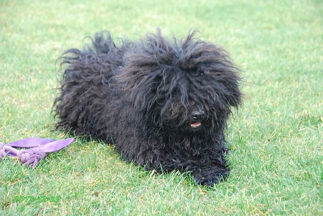

A kutya vagy eb ( Canis lupus familiaris ) ujjon járó emlős ragadozó állat, a szürke farkas ( Canis lupus lupus ) egy már kihalt alfajának háziasított formája. Az egyetlen olyan emlős állatfaj, amely tudományos nevében megkapta a familiaris, azaz a családhoz tartozó jelzőt. A kutyákat szokás a társállatok sorában emlegetni. Ezenkívül tágabb értelemben kutyának neveznek a kutyafélék (Canidae) családján belül a valódi kutyaformák ( Canini ) nemzetségéhez tartozó több más fajt is: ilyenek például a kisfülű kutya ( Atelocynus microtis ), az ázsiai vadkutya ( Cuon alpinus ), a nyestkutya ( Nyctereutes procyonoides ), az afrikai vadkutya vagy hiénakutya ( Lycaon pictus ) és az őserdei kutya ( Speothos venaticus ). A háziasított kutyát mindezektől a házikutya elnevezéssel különböztetik meg. Szócikkünkben „kutya” alatt a házikutya értendő. A kutyák munkatársként vagy munkaeszközként (például: őrkutyák, vadászkutyák, szánhúzókutyák, vakvezetőkutyák), terápiás állatként, házi kedvencként egyaránt szolgálják az embereket. Kelet-Ázsiában (vagy éhínség idején a világ többi részén is) emberi táplálék is lehet belőlük, ilyen célra tenyésztett fajta például a csau csau. Forrás (https://hu.wikipedia.org/wiki/Kutya)

A puli
A puli világszerte a legismertebb magyar terelőkutyafajta. Ősei a pásztoremberek nélkülözhetetlen segítői voltak. Akár egy marhát is adtak egy-egy híres terelő kölykéért. A külsejével nem törődtek. Mintegy 100 éve szervezetten tenyésztik. Tartalom jegyzék: az oldalon található bekezdés címekből Történet
A puli története messzire nyúlik vissza. Már a Kr. e. 4. évezredből maradt ránk olyan sumer szobor, amely egy pulihoz nagyon hasonlító kutyát ábrázol. Annyi bizonyos, hogy őseinkhez valamikor ázsiai vándorlásuk közben került, s együtt érkeztek a Kárpát-medencébe, ahol évszázadokig mint a pásztorok hű segítője szerzett magának hírnevet. Első leírója Heppe volt 1751-ben, és utána sokan megemlítik írásaikban a puli bozontos szőrét, hihtetlen intelligenciáját és munkabírását. Az 1900-as évek elején megváltozott a mezőgazdaság szerkezete, csökkent a legelők területe és ezzel a puli munkalehetősége is. A kipusztulástól Raisits Emil és munkatársai tevékenysége mentette meg. Egyre kevesebb kutya maradt meg eredeti munkakörénél, a puliból sztárfajta lett. Példányai bekerültek a tanyákra, falvakba, városokba, mint házőrzők, testőrök vagy kedvencek, esetleg rendőrkutyák. 1935-ben Anghi Csaba vezetésével állították össze a fajtaleírását. A második világháború a nagy létszámú, erős populációban nagy károkat nem tett, de a tenyésztést néhány évre visszavetette. Az 1960-as években elkezdődött a puli tervszerű tenyésztése Ócsag Imre vezetésével, aminek során a fehér, majd a szürke és a maszkos fakó szín kitisztult, a szőrzet minősége javult. Ma a puli, úgy tűnik, visszatalál eredeti foglalkozásához, hiszen az 1990-es évektől kezdve kerülnek megrendezésre a terelési ösztönpróbák, amelyeken pulik is részt vesznek. Bebizonyosodott, hogy a hosszú ideje megváltozott körülmények között élő pulinak a legkevesebb a terelőhajlama a három terelőkutyafajta közül, de a helyzet azóta sokat javult. A külföldi fajták térnyerése mellett a puli népszerűsége sokat csökkent az utóbbi években, de ez megakadályozza azt is, hogy a fajta túltenyésztett divatkutyává váljon.

Külleme és jelleme A puli legfeltűnőbb külső tulajdonsága szinte páratlan szőrköntöse, amely a fajta egyik védjegye. A szőrtakarója lehet zsinóros, szalagos, nemezes vagy csak egyszerűen gubancos, de annyi bizonyos, hogy főleg a lakásban tartott példányoknál alapos gondozást igényel. Nyaka a hosszú szőrzet miatt szinte nem is látható. A szemet ernyőszerűen takarja a fej sűrű szőrzete, így a fej gömbölyűnek tűnik. Színe leggyakrabban fekete, de lehet fehér, szürke vagy fakó és ezeknek különböző árnyalatai. A puli hosszú történelme, fennmaradása a szorgalmának, találékonyságának, intelligenciájának köszönhető. A zord körülmények, a kemény munka edzetté, ellenállóvá, igénytelenné tették a fajtát, és ezek a vonások a mai napig jellemzőek a pulira. Megszokta az önálló munkavégzést, s azt, hogy gazdája minden szavát lesse. Egyénisége elbűvölő. Kedveskedő, családszerető, különösen kedveli a gyerekeket, ezzel együtt önérzetes és sértődékeny. Kitűnő házőrző, aki mindent hangosan kommentál. Megvesztegethetetlen hírben áll. A kertes házak őrzőjének, barátnak egyformán alkalmas jószág. Városi lakásban - nemezesedő bundájának erős szaga miatt - nem ajánlott a tartása. Erről a kutyáról el lehet mondani, hogy csak éppen beszélni nem tud. Szinte mindent megért! A jól nevelt puli nem csak gazdája szavait, de intését, sőt akár szemeivel kifejezett akaratát is parancsnak veszi, és feltétel nélkül teljesíti. Energikus, mozgékony, nagyon élénk vérmérsékletű, sohasem lusta állat. Bátor, szinte semmitől sem fél. Ugatós, de kiegyensúlyozott kutya.
Színei
A puli négyféle színben fordul elő: fekete, fehér, szürke és maszkos fakó.Korábban a puli fajtisztaságát a színéhez kapcsolták: míg egy időben a fekete színű állatot nem tartották fajtisztának, később kizárólag a fekete puli minősült annak.A fehér szín az 1960-as évekre annyira ritka lett, hogy vészharangot kongattak: kipusztulhat a fehér puli. A tenyésztők ekkoriban kiemelt figyelmet fordítottak a különleges színű állatra, így mára már nem számít ritkaságnak. A fehér szín alatt érthető gyöngyfehér és zsemleszín is.A fajtaleírás szerint ugyan a pulikutya egyszínű, ám ez inkább jelenti azt, hogy kifejezetten foltos állat nem létezik, mint azt, hogy ne lehetnének szőrzetében színátmenetek: az ilyen típusú kutya nevezhető maszatos fakónak, vagy népiesen ordasnak. forrás ( https://hu.wikipedia.org/wiki/Puli_(kutyafajta))| Vizsla | Származás | Testtömege |
|---|---|---|
| Burgosi vizsla | Spanyolország | 23-32 kg |
| Portugál vizsla | Portugália | 23,5 kg |